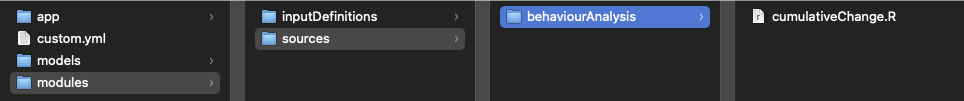
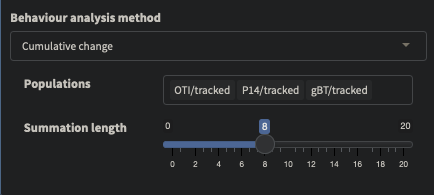
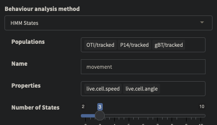
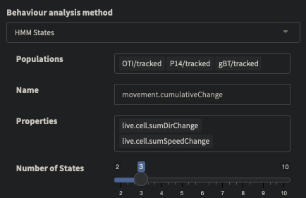
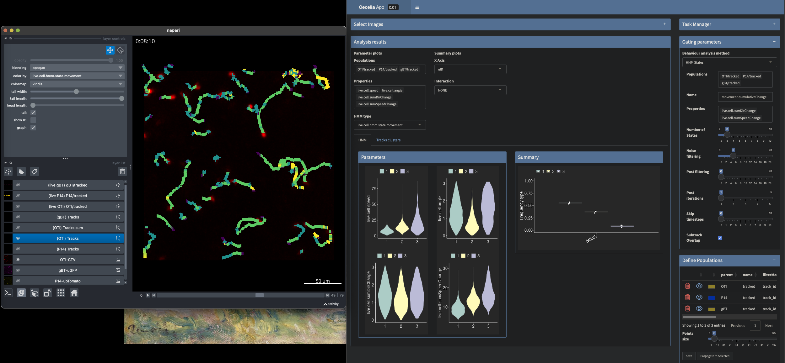
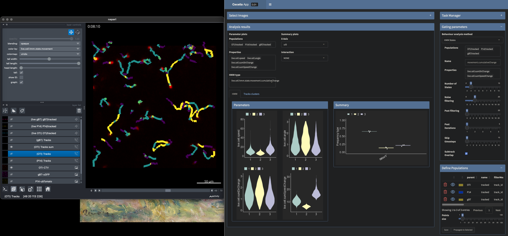

Create custom module#
We can create custom modules and respective input definitions by creatting an R6 class and a JSON file respectively. As an example we take the analysis from Access data in RMarkdown.
Live cell imaging#
R Markdown#
To start off, we can design the functionality we want as R Markdown. In this example we are modifying the way in which the angle and speed of cell tracks is calculated. By default, the angle for each object is defined by the previous two timepoints. That is, you will have three points and the two lines between those define the angle. You could increase the distance between these two lines and measure the angle between the first and last segment of a given track. This would give you a coarser measurement of the angle and could be used to classify behaviour differently. We will illustrate this by applying a Hidden Markov Model on these modified measurements.
Attention
Please complete the previous tutorial (Access data in RMarkdown) to follow the steps.
To calculate angles, we must get tracks. Tracks can be obtained by using their population (eg/ cell_typeA/tracked) or value (eg/ cell_typeA) names. A value name is the name of the segmentation that the populations are derived from, ie/ the filename for the segmentation.
1# get value names from populations
2valueNames <- sapply(pops, .flowPopParent, USE.NAMES = FALSE)
3names(valueNames) <- valueNames
4
5# get tracks for populations
6tracks <- lapply(valueNames, function(x) cciaObj$tracks(x))
7tracks
{kind=link}
To get the angle between the first and the last segment of a track we can use the overallAngle function from the celltrackR package. steps.subtracks defines the length of the sub segments that we can split the track up into. These segments are overlapping by default. You could pass the argument steps.overlap = 0 to make them non-overlapping. tracks.measure.fun is a convenience function from Cecelia to process tracks from multiple sources. In this case we have three cell types: OTI, gBT and P14.
We can call this convenience function which will generate another data-table of tracks with the given angle measurement. This tracks data-table can be merged to the original population data-table based on value name, track ID and cell ID (which is the cell number within a given track).
1# get cumulative change of direction for each track
2sumLength <- 8
3
4popDT[
5 tracks.measure.fun(
6 tracks, celltrackR::overallAngle, "live.cell.sumChange",
7 steps.subtracks = sumLength, idcol = "value_name",
8 increment.cell.id = TRUE),
9 on = .(value_name, track_id, cell_id),
10 live.cell.sumChange := .(live.cell.sumChange)
11]
We can the compare this modified angle with the default angle of a given track.
1# plot out and compare
2track_to_show <- 43
3
4# https://stackoverflow.com/a/21538521
5myPalette <- colorRampPalette(rev(RColorBrewer::brewer.pal(11, "Spectral")))
6sc <- scale_colour_gradientn(colours = myPalette(100), limits=c(1, 180), name = "Angle (°)")
7
8ggplot(popDT[value_name == "P14" & track_id == track_to_show],
9 aes(centroid_x, centroid_y, group = track_id,
10 colour = pracma::rad2deg(live.cell.sumChange))) +
11 theme_classic() +
12 geom_path() +
13 # facet_grid(.~pop) +
14 # scale_color_brewer(palette = "spectral", name = "Sum (°)") +
15 sc +
16 ggtitle("Cumulative change") +
17 coord_fixed() +
18 theme(
19 axis.text.x = element_blank(),
20 axis.ticks.x = element_blank(),
21 axis.text.y = element_blank(),
22 axis.ticks.y = element_blank(),
23 axis.line = element_blank(),
24 axis.title.x = element_blank(),
25 axis.title.y = element_blank(),
26 )
1ggplot(popDT[value_name == "P14" & track_id == track_to_show],
2 aes(centroid_x, centroid_y, group = track_id,
3 colour = pracma::rad2deg(live.cell.angle))) +
4 theme_classic() +
5 geom_path() +
6 # facet_grid(.~pop) +
7 # scale_color_brewer(palette = "spectral", name = "Angle (°)") +
8 sc +
9 ggtitle("Angle") +
10 coord_fixed() +
11 theme(
12 axis.text.x = element_blank(),
13 axis.ticks.x = element_blank(),
14 axis.text.y = element_blank(),
15 axis.ticks.y = element_blank(),
16 axis.line = element_blank(),
17 axis.title.x = element_blank(),
18 axis.title.y = element_blank(),
19 )
{kind=link}
{kind=link}
Creating a module#
To look at this measurement, apply it to other images and to use it for other purposes it is easiest to create custom module. Every module is an R6 class. You can add this module to the GUI by providing an input definition that will be read by the Input manager and displayed on the defined modules page. Custom modules can be added to the base directory that you used to install Cecelia. Create a folder modules and the sub-folders sources and inputDefinitions. Every category in Cecelia is a module with a function name. You can find the categories and their function names here: Module function names.
In this case we will put the calculation of the modified angle into Cell Behaviour. Create a folder in sources and inputDefinitions named behaviourAnalysis. In the sources/behaviourAnalysis folder, crate a file named cumulativeChange.R and in the inputDefinitions/behaviourAnalysis a file named cumulativeChange.json.
{kind=link}
The following is the backbone for every module function. The key parts are that the class name corresponds to the function name. The class inherits from the main module, in this case BehaviourAnalysis. The function can then be called with behaviourAnalysis.cumulativeChange. The main logic is in the run function. We will fill in this function step by step.
1CumulativeChange <- R6::R6Class(
2 "CumulativeChange",
3 inherit = BehaviourAnalysis,
4
5 private = list(
6 ),
7
8 public = list(
9 # function name
10 funName = function() {
11 paste(
12 super$funName(),
13 "cumulativeChange",
14 sep = cecelia:::CCID_CLASS_SEP
15 )
16 },
17
18 # run
19 run = function() {
20 }
21 )
22)
Place all code that follows into the run function. Every task has a log file associated with it. This file will be located in the directory of the image or image set that the function is running on. self$initLog() initialises the logfile and self$writeLog() will write the output. Every task is run on an image or image set. We can work with this object by calling self$cciaTaskObject(). All parameters that are passed to the function call are available through self$funParams(). In this first section, we initialise the log, get the task object and get the function parameters.
1self$initLog()
2self$writeLog("Calculate HMM for cells")
3
4# get object
5cciaObj <- self$cciaTaskObject()
6
7popType <- self$funParams()$popType
8pops <- self$funParams()$pops
To save the new measurement, we need the population data-table. We can retrieve this with cciaObj$popDT() and passing the population names and type. The population type (Population types) refers to the method how these were derived.
1self$writeLog("Get population DT")
2
3# get labels for populations from images
4# must get the whole data.table to save values back to labels
5popDT <- cciaObj$popDT(
6 popType = popType,
7 pops = pops,
8 includeFiltered = TRUE
9)
We can get the tracks by their population name, eg/ P14/tracked, or by their value name, eg/ P14. And then again apply the summary functions to extract the angle between the first and the last segment of the track segments. We can do the same quantification for speed of the cells, ie/ to consider the distance between points with a gap. This will also give us a more coarse expression of the cellular movement. This is the same logi as we have applied in the R Markdown example above.
1# get value names for pops
2valueNames <- sapply(pops, .flowPopParent, USE.NAMES = FALSE)
3names(valueNames) <- valueNames
4
5# get tracks for populations
6tracks <- lapply(valueNames, function(x) cciaObj$tracks(x))
7
8# get cumulative change of direction for each track
9popDT[
10 tracks.measure.fun(
11 tracks, celltrackR::overallAngle, "live.cell.sumDirChange",
12 steps.subtracks = self$funParams()$sumLength, idcol = "value_name",
13 increment.cell.id = TRUE),
14 on = .(value_name, track_id, cell_id),
15 live.cell.sumDirChange := .(live.cell.sumDirChange)
16]
17
18# get cumulative change of speed for each track
19popDT[
20 tracks.measure.fun(
21 tracks, celltrackR::speed, "live.cell.sumSpeedChange",
22 steps.subtracks = self$funParams()$sumLength, idcol = "value_name",
23 increment.cell.id = TRUE),
24 on = .(value_name, track_id, cell_id),
25 live.cell.sumSpeedChange := .(live.cell.sumSpeedChange)
26]
We now must save these measurements back to the original labels data. Every segmentation is a different labels file. We must therefore go through the individual value names separately. cciaObj$labelProps() will give us the labels as a View on Anndata. This is a python class called LabelPropsView that has convenience functions to work with Anndata in the context of this package. We can merge the measurements to the existing labels and then use labels$add_obs() to add these back as a list. labels$save() will save the labels and the measurements are now available to view in napari and can be used for further processing.
1# go through value names
2for (j in unique(popDT$value_name)) {
3 self$writeLog(sprintf("> %s", j))
4
5 # save back to labels
6 labels <- cciaObj$labelProps(valueName = j)
7
8 # merge to existing labels
9 mergedDT <- popDT[value_name == j, c(
10 "track_id", "cell_id",
11 "live.cell.sumDirChange", "live.cell.sumSpeedChange"
12 )][
13 as.data.table(labels$values_obs()),
14 on = .(track_id, cell_id)
15 ]
16
17 # push back to labels
18 labels$add_obs(
19 as.list(mergedDT[, c("live.cell.sumDirChange", "live.cell.sumSpeedChange")])
20 )
21
22 labels$save()
23 labels$close()
24}
Then we can close the logfile and we are done. The whole file is available here
1# DONE
2self$writeLog("Done")
3self$exitLog()
Testing the module#
The module can be tested from R Markdown. you can place a browser() command anywhere in the run function for debugging purposes. We must define the function parameters as a named list. Functions can then be run with cciaObj$runTask(). The function name must be passed along with the parameters, the running environment, whether it should run in place as a separate process as well as the task ID number that will be assigned to the running task. Processes can run in parallel when using separate processes - just make sure that each process has a unique task ID otherwise they might interfere with each other.
1# run task
2funParams <- list(
3 popType = "live",
4 pops = c("OTI/tracked", "P14/tracked", "gBT/tracked"),
5 sumLength = 8
6)
7
8# run task
9task <- cciaObj$runTask(
10 funName = "behaviourAnalysis.cumulativeChange",
11 funParams = funParams,
12 env = "local",
13 runInplace = TRUE,
14 taskID = 1
15)
Add the module to the GUI#
We must create a JSON file to integrate the function and expose the parameters in the main GUI. Start editing the cumulativeChange.json file that we created earlier within the inputDefinitions folder. The backbone of the input definition looks like the following. In fun we must provide the function name cumulativeChange and give it a category under which it will be listed in the function selection and a label. Functions can run locally or on an HPC system. For our use case we focus on the local environment only. This format was inspired by Zeiss’ module specification.
1{
2 "fun": {
3 "cumulativeChange": {
4 "category": "Module functions",
5 "label": "Cumulative change",
6 "env": ["local"]
7 }
8 },
9 "spec": {
10 "inputs": {
11 },
12 "outputs": {}
13 },
14 "ui": {
15 "inputs": {
16 },
17 "outputs": {}
18 }
19}
In spec we define the data types for each parameter. Populations are a list and the length of the summation is an integer with min, max and default values.
1"spec": {
2 "inputs": {
3 "pops": {
4 "type:list": {}
5 },
6 "sumLength": {
7 "type:integer": {
8 "min": 0,
9 "max": 20,
10 "default": 4
11 }
12 }
13 },
14 "outputs": {}
15},
In ui we define the GUI elements for the parameters. For populations, there is a predefined population selection widget that we can utilise. For the summation length we can use a slider. Here is a list of all supported widgets: Input widget types. The complete JSON file is here.
1"ui": {
2 "inputs": {
3 "pops": {
4 "index": 0,
5 "label": "Populations",
6 "widget:popSelection": {
7 "size": 1,
8 "multiple": true
9 }
10 },
11 "sumLength": {
12 "index": 1,
13 "label": "Summation length",
14 "widget:slider": {
15 "step": 1
16 }
17 }
18 },
19 "outputs": {}
20}
Comparing the output of the function#
We can now use this new function to compare its impact on the behaviour extraction from cells. In the GUI under Cell Behaviour, select our newly created Cumulative change function. Select all tracked populations and set the summation length to 8. Run the function.
{kind=link}
Then extract 3 HMM states with the default live.cell.speed and live.cell.angle and our new measurements of live.cell.sumDirChange and live.cell.sumSpeedChange.
 {kind=link}
{kind=link}
Now you can open up the image and compare the HMM state results from these two approaches. The behaviour extracted with our new measurements is a bit coarser than the default one and might be useful for certain settings where you want to simplify results. We can use a viridis scale to look at the outcome of the HMM states (yellow = 3, green = 2, blue = 1, purple = No state). At the same time we can check the properties of these individual states in the shiny app.
HMM states using the default speed and angle measurements.
{kind=link}
HMM states using the rom our modified version.
{kind=link}